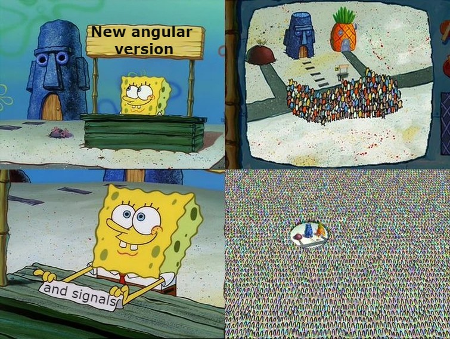
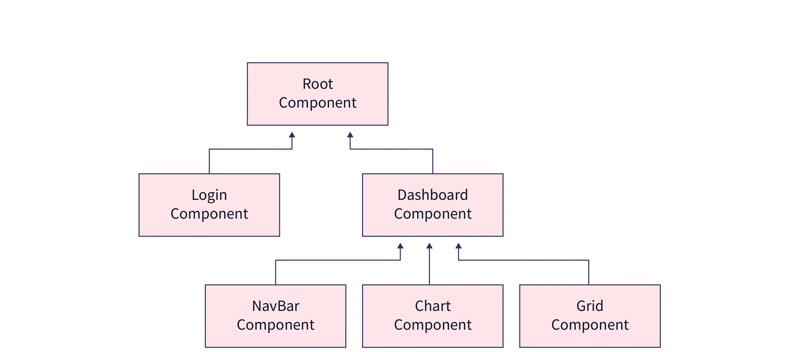
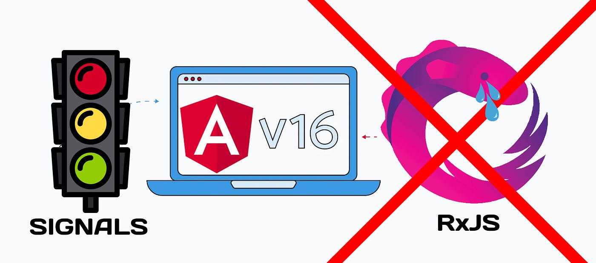

June 27, 2023 by Jovan Mitrović
Angular Signals

Hello to all fans of Angular framework, we have some great news for you. In the newest version of Angular, version 16, we have an opportunity to see the new reactive model in Angular, Signal. For those that don’t know, Angular is a framework for developing mobile, desktop and primarily web applications. Developed and created by Google engineers it’s one of the most popular front-end frameworks today. Because of it’s complexity, developers who are just starting to learn it usually have difficulties. Angular team have decided to make developers lives a bit easier by introducing the new concept called Signals. Before we jump into signals we should first explain what is Zone.js and the concept of Change detection

Zone.js
Why is Zone.js till today one of the most important library used in Angular applications? Zone.js is a library that is used to signal when change detection cycle is suppose to run inside Angular app. At the start of any Angular application, Zone.js monkey patches all the native APIs (in case of web application, native browser APIs). What does monkey patching even mean!? Monkey patching is a term used to describe dynamically changing code while the application is running. Still sounds confusing? We will take setTimeout as an example of native browser API.
const originalSetTimeout = window.setTimeout;
window.setTimeout = (cb, delay) => {
// Inserting additional code inside native API
console.log("I'm monkey patched");
return originalSetTimeout(cb, delay);
};
What do you think will happen when we run this code?
setTimeout(() => {
console.log("Hello");
}, 1000);
If your answer is that the console will display “I’m monkey patched” and then after one second “Hello” you are right. We changed the functionality of the native API by storing the original API inside originalSetTimeout variable, after which we re declared that same API by giving it the value of the old one and we added the new line of code (line 4). As you can see, everyone can change native APIs however they like, isn’t that awesome! Zone.js does exactly the same thing, except the additional functionalities that it’s adding are related to change detection cycle inside Angular framework.
Change detection
As you may guess, change detection is responsible for detecting all the changes that are happening inside the application. When we say changes we are referring to every interaction with our application by the user or some other service (user clicking on the page or asynchronous server response) In order to better understand how does change detection work we have to get to know the basic architecture of every Angular application.
Components
The most basic element in Angular ecosystem is a component. Component is a UI building block whose properties can be different depending on the applications that is being developed. For example, most of the websites consists of: header, footer and search input field. Each of these items can be represented as a unique component, we could have searchComponent which consists of input field and the logic for searching. This enables components to be used in more that one place on our website, which is a huge benefit, because we can develop our website with greater speed and control (making our code cleaner and easier to maintain as well).

On the picture above you can see the relationship between different component in a form of a tree. In the “heart” of every Angular application there is a root component (in real application App Component) It holds every other component that was made in development of the application (like some sort of a shell). During the startup of any Angular application root component (App Component) will be the starting point, namely root component is the only component that will be bootstrapped during the initial startup.
How does Change detection function
When there is an action on the page (mouse click for example), Angular will go through the component tree and will check if there are any state value changes in template that is being shown, so it could update the values shown with the current state values. You can assume that this definitely affects the performance of our applications (imagine the picture above with 100 components in the tree), but on the other hand there are optimizations that we as developers can apply. One of those optimizations is OnPush Change Detection strategy, which we will not analyze in this blog, but what we can say is that change detection is being executed more efficiently using it (Angular will not go through the whole component tree to check if there are any changes, it will be able to “filter” certain parts of the component tree). You can read more about OnPush Change Detection strategy on this blog: https://huantao.medium.com/angular-change-detection-onpush-with-examples-5187f8b2d6e6.
Signals
We are coming to the “meat” of our blog. Signals are the new Angular primitive (SolidJS is the first framework that popularized the idea, even though it was first used in Knockout.js) You can imagine them as a shell (or a box) that holds the primitive value.
import signal from "@angular/core"
age = signal(25);
people = signal<string[]>([]);
We are creating signals by using signal function from @angular/core package, and we are initializing them by using signal constructor function. In the example above we can see that the every signal has to have initial value (very similar to BehaviorSubject in rxjs). How can we use signals? In the next lines of code we can see some of the functionalities.
console.log(this.age()); // Show the value of the signal
this.age.set(10); // Change the initial value of the signal
this.age.update((currentAge) => currentAge + 1); // Update the value of the signal by using the previous one as the first argument
this.people.mutate((peopleList) => {
peopleList.push("Marko"); // Similar to update, except we can change the value in an mutable way
});
As you can see, whenever we want to access the value of the signal, we have to call that signal as a function without parameters (getter function). This looks great, but it kind of looks like Map object in Javascript. Now we will show an additional function of the signals that will change that.
<div>{{ age() }}</div>
We can use signals directly in our template, and with every change of the signal it will notify all of it’s consumers that the value has changed. This may remind of of observable pattern, but there a couple of differences (just like rxjs primitives, signals are reactive).
<div>{{ age | async }}</div>
age = new BehaviorSubject(25);
First is that we don’t need to subscribe to signals (we just call it in the template, avoiding potential memory leak), second, more important, we actually don’t need Zone.js library anymore!!! You can notice that rxjs can be replaced by signals as well (we will talk a bit more about this later) We said that signals can have consumers, what does that mean?
There are two types of signals:
- the ones in which we can write values in (WritableSignals)
- the ones derived from other signals (readonly)
Writable signals can also be called producers, because they are producing new values (check the age signal in the example above). Readonly signals are depending on other signal (their value can only be read, it is not possible to change it with a function). In order to understand what are derived (readonly) signals, we will give you an example
olderBrotherAge = computed(() => this.age() + 4);
To create a readonly signal we use computed function, into which we pass the signal which value changes we want to track. Difference between computed (readonly) signals and generic (writable) signals is that the last value of the computed signal is being cached so if there are no value changes of the signal that is being used inside of the computed function of the derived (computed) signal, callback will not execute.
One more function that we will analyze is an effect.
effect(() => {
console.log("Brothers age changed to: ", this.olderBrotherAge());
});
Effect function schedules and runs a side-effectful function inside a reactive context. Callback function of the effect will re execute if there are any changes to the values of the signals used inside of it (looking at the example above, if olderBrotherAge signal changes it’s value, console log would be executed). How do these signals and side effects communicate with each other?
Push/Pull
<div>{{age()}}</div>
<div>{{olderBrotherAge()}}</div>
<button (click)="increase()">Increase age</button>
age = signal(8);
olderBrotherAge = computed(() => this.age() < 40 ? this.age() + 4 : 44);
constructor() {
effect(() => {
console.log(this.olderBrotherAge() >= 18 ? `Brother is an adult and he is: ${this.olderBrotherAg()} years old`: 'Brother is not an adult yet');
})
}
increase() {
this.age.update((previousAge) => previousAge + 1);
}
We wrote an example of a small application where we have a button with whom we can increase our age. After we turn 40 years old someone from the ministry of interior accidentally deletes all the information about our brother from the database, so the last information that we have regarding our brothers age is that he is 44 years old. We also have an effect that is checking if our brother is an adult (line 6). What happens when we click the button “Increase age” (we will ignore the initial state for now, even though the same thing happens after initial startup)?
1. Change in the value of our Writable signal (in this example age signal) sets off Push/Pull algorithm
2. Our producer age pushes its dirtiness and notifies its consumers, in this example olderBrotherAge, that it’s value is old and that it should update it
3. olderBrotherAge also has its consumers, so it notifies them that their values are stale (console.log in effect, line 6)
4. effect (console.log), polls for the latest value from olderBrotherAge signal. olderBrotherAge again polls for the latest value from the age signal. Age signal has updated its value and version value (we will explain what this is later) and notifies olderBrotherAge signal of its new state
5. olderBrotherAge recomputes its own value, determines that its value has changed, and increments its value version
6. Effect recognizes that the value version of the signal used within it has changed, pulls the new value and logs ‘Brother is not an adult yet’ in the console
What is this term “value version” that we used previously, Basically every signal contains a numerical value version which it increments only if the “real” value of the signal has changed. This represents the semantic identity of that value. We are going to build up on the last example in order to explain this concept What will happen when we turn 41 years old?
In order not to repeat all the steps, we will just show you what happens at the end of the push/pull algorithm.
5. olderBrotherAge recomputes its value again (because the age signal has changed), but know its value stays the same, 44. Now this signal will NOT change its value version.
6. At the end, the effect realizes that the value version of its producer has not changed, so there is no need to execute the callback function.
Because of this way of communication between signals (writable, readonly and effects), you don’t have to worry about memory leak.
Conclusion
After all of this, the benefits of using the signals are:
- Zone.js library is no longer necessary, which will decrease the bundle size and make our applications more efficient(there is no longer the need to go through the whole tree of components, change detection is local). One note about this, local change detection will be possible after the Angular version 17 (for now we still have global change detection)
- Rxjs will be used less (this could also be a bad thing for everyone that has more experience with that library). But don’t worry, even though signals may be better in a lot of cases, for any more complex asynchronous events rxjs is still more reliable (asynchronous server data or complex eventEmitters)

Wait a second, why would we even use rxjs in our apps, didn’t we say that we want to remove the whole Zone.js library, but for displaying observables we need async pipe (we can also declare a variable which could hold the value of the data received from the observable, but we still need Zone.js to track the changes of that observable)? Angular team will, in the future, release new function for automatic conversion from observables to signals and vise versa (toObservable() and toSignal() they might look something like this).
What will happen to the libraries for state management that use rxjs as its base (we are referring to Ngrx)? Ngrx team is also up to date with the latest changes that signals will bring. They will release a new way to manage state with signalStore (integration is already here in version 16 with selectSignal , which is similar to the classic select, but it returns signal rather than observable). You can check RFC for signalStore on this link: https://github.com/ngrx/platform/discussions/3796.
If you have any more questions, feel free to ask tech9320 team directly 😀
Well Angular lovers, signals will definitely change the whole concept of working in Angular framework. This might look a bit scary, but at the same time it is very encouraging, because in the future we might see more and more applications being developed in our favorite framework. If you want more information regarding signals, you can check the following links:
- Great blog about signals: https://dev.to/this-is-angular/angular-signals-everything-you-need-to-know-2b7g
- Signal playground: https://stackblitz.com/edit/angular-signals-deborahk?file=src%2Fmain.ts
- Short youtube video about signals: https://www.youtube.com/watch?v=4FkFmn0LmLI&ab_channel=JoshuaMorony